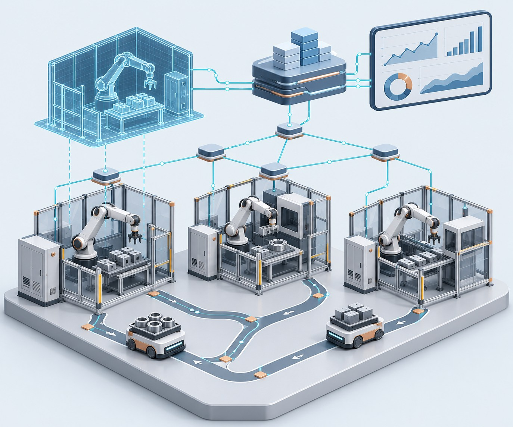

Systems & integration
Automation
I develop control software, integrate machines and AGVs and bring systems into service. My work covers PLC, HMI and SCADA applications, testing, troubleshooting and commissioning.
Automation, Digitalisation & AI Specialist
I’m Akshay Avhad, PhD, an automation, digitalisation and AI specialist with a systems engineering approach to smart manufacturing. I connect industrial control, robotics and data platforms across IT and OT, combining hands-on software development with technical leadership. My work spans pioneering research on self-organising production systems, digital twins, data engineering and multi-agent systems, helping turn Industry 4.0 concepts into practical manufacturing solutions.

Expertise
Systems & integration
I develop control software, integrate machines and AGVs and bring systems into service. My work covers PLC, HMI and SCADA applications, testing, troubleshooting and commissioning.
Data & business intelligence
I turn operational data into usable applications and business intelligence. My work connects SAP, MES and laboratory data with Snowflake, Python, Streamlit and Power BI to support production and business decisions.
Analytics & decision-making
I lead and coordinate analytics and AI initiatives and develop multi-agent approaches to planning and coordination. I also explore Agentic AI, digital twins and knowledge graph-based retrieval for manufacturing workflows.
Technical leadership
I bring people, technology and business priorities together to move smart manufacturing initiatives from strategy into practice.
Current areas of exploration Agentic AI, semantic interoperability, Asset Administration Shells and knowledge graph-based retrieval-augmented generation.
Selected work
Automation · AAT Automation
I developed software for an interface upgrade and managed testing for automated baggage loading within the baggage-handling system at Schiphol Airport.
Explore the roleDigitalisation · H. Lundbeck
I manage and develop a quality-control analytics application using SAP and laboratory data, alongside software and data solutions built with Snowflake and Streamlit.
Explore my current roleAI & analytics · H. Lundbeck
I lead and coordinate analytics and AI initiatives for chemical production. My project portfolio includes process intelligence and control charts, alongside contributions to digital and AI strategy.
Explore my current roleAutomation · AAT Automation
I carried out system integration and troubleshooting for a CLAAS tractor assembly line with automated guided vehicle integration, alongside on-site commissioning of AGV solutions.
Explore the roleDigitalisation · H. Lundbeck
I develop Power BI apps for project management, health, safety and environment (HSE), and value-stream KPIs, working with teams to clarify the information they need.
Explore my current roleAI & autonomous systems · Applied research
My co-authors and I connected layout planning, scheduling and robot fleet control in a simulation testbed for Swarm Production, evaluating scenarios with different product mixes.
Explore the researchDigitalisation · Streamlit platform
I develop a Streamlit platform that brings together process intelligence, controls and traceability for production teams.
Digitalisation · Quality reporting
I develop a proof of concept for quality reports and prepare the draft for the project’s next version.
Digitalisation · Systec & Services
I built a multitenant SaaS prototype in Grails to explore secure data exchange between ERP and MES, with embedded Groovy scripts for customer-specific extensions.
Food & beverage · Jain Irrigation
Automation projects for a fruit pulp extraction plant and an onion dehydration plant.
Power · Tata Power
Integration of a PLC-5 control system with WinCC over Ethernet.
Utilities · Offshore Infrastructure
Industrial automation work for the Jaisalmer water pumping station.
Power · Sterling Generators
Diesel generator control, changeover and utility automation.
Energy · HPCL
Energy management and TAS integration at MPSL, plus common drive panel and medium-voltage drive commissioning at Vashi.
Manufacturing · MRF Tyres
Manufacturing execution system integration for the Hyderabad tyre manufacturing site.
About
I’m a specialist in automation, digitalisation and AI, combining hands-on software engineering with technical leadership and project delivery.
As Digitalisation Lead at H. Lundbeck, I develop software and data applications for chemical production, build business intelligence with Power BI and coordinate analytics and AI initiatives. I work with production, engineering, IT and OT teams to turn operational needs into practical solutions.
My background spans PLC and robot software, system integration, commissioning and autonomous systems. A PhD in Industrial Engineering adds depth in multi-agent coordination, optimisation and simulation to that engineering practice.
Professional experience
H. Lundbeck A/S
I deliver digitalisation initiatives for the chemical production value chain, working across IT and OT and contributing to digital and AI strategy.
Manufacturing Academy of Denmark (MADE)
Developed demonstrators for adaptive production planning, scheduling and autonomous mobile robot control in a work package steered by LEGO and Danfoss. Investigated a holonic reference architecture for scaling self-organising production.
WZL, RWTH Aachen University
Collaborated on Swarm Production and line-less mobile assembly, using discrete-event simulation to study production planning, scheduling and fleet management.
Modular Automation Ltd.
Developed PLC and robot software for medical technology equipment, integrated discrete controls with instrumentation and supported commissioning across multiple projects.
AAT Automation GmbH
Developed software for an interface upgrade and managed testing for automated baggage loading at Schiphol Airport. Carried out system integration and troubleshooting for a CLAAS tractor assembly line with AGV integration. Reverse-engineered automation projects and commissioned AGV solutions on site.
Danfoss A/S
Assessed factory processes for Industry 4.0 opportunities and examined requirements for a track-and-trace system.
Systec & Services GmbH
Developed a multitenant cloud application prototype to evaluate Grails for secure ERP and MES data exchange.
EVIO Pvt. Ltd.
Worked in commissioning for a Siemens system integrator.
Softcon Automation
Developed PLC, SCADA and historian applications, conducted factory and site acceptance testing and commissioned projects across food and beverage, oil and gas, life sciences and tyre manufacturing.
References
Short excerpts from professional and academic reference letters.
Autonomous systems
“Akshay played a central role in defining this concept and developing key aspects of swarm production systems.”
Systems design & initiative
“Akshay has headed a pioneering research effort into swarm production and has helped define, conceptualise and design several key aspects and components in a swarm production system.”
ERP–MES & cloud development
“Akshay Raghunath Avhad worked very reliably and quickly. He contributed his thoughts well when the work was being prepared and planned independently.”
Industrial IoT & automation
“As a person he is passionate about the idea of Industrial IoT and advancing manufacturing technologies.”
Planning & execution
“He always shows great initiative and diligence; he is able to develop intelligent plans and implement them successfully.”
Automation software
“He has a good command over application development in PLC/PAC, HMI/SCADA systems and VFD integration…”
Research & publications
My work on Swarm Production provides a foundation in multi-agent systems, planning, optimisation and autonomous coordination. Explore the demonstrators and publications below.
Swarm Production · Demonstration
A first look at the Swarm Production prototype and the flexible factory concept in practice.
Watch prototype 1Swarm Production · Demonstration
A second demonstration from my Swarm Production work, exploring the concept through another prototype.
Watch prototype 2Journal of Manufacturing Systems 79, 484–503 · Elsevier
Integrates dynamic layout optimisation, scheduling and fleet management in a software-in-the-loop testbed. The study evaluates production scenarios across different order and product mixes.
SSRN · Aalborg University research record
Explores a top-down architecture for Swarm Production built around holonic digital twins.
Aalborg University Open Publishing
Brings together research on movable workstations, topology planning and multi-robot execution to describe how a production system can reorganise its physical structure.
Procedia Computer Science 232, 934–945 · Elsevier · ISM 2023
Implements a multi-robot simulation testbed for Swarm Production and uses an example manufacturing case to demonstrate its planning, scheduling and control components.
SSRN
Explores a holonic architecture for coordinating the systems involved in self-organising Swarm Production.
Computers in Industry 151, 103981 · Elsevier
Proposes a multi-agent Swarm Manager architecture for task planning, allocation and scheduling across transport robots and mobile workstations.
Computers in Industry 146, 103851 · Elsevier
Proposes a control architecture to use the routing flexibility and redundancy of matrix-structured manufacturing. It is evaluated in a simulated industrial case study.
Advances in Automotive Production Technology, 133–148 · Springer · SCAP 2022
Defines a Topology Manager and applies a force-directed graph method to generate candidate workstation layouts for changing product mixes.
Towards Sustainable Customization, 105–112 · Springer · CAR V 2021 / MCPC 2021
Defines Swarm Production through dynamic part routing and movable workstations, and outlines the technical challenges using a customisable product as an example.
Contact
Get in touch to discuss automation, digitalisation and AI roles, projects and collaboration, from system integration and business intelligence to intelligent applications.